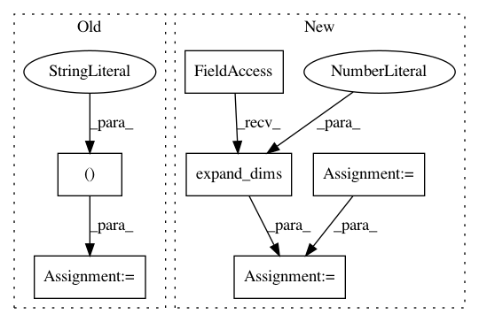

99754e7c704346c025a21ee61efeda2f7c02a3b3,ludwig/models/modules/sequence_decoders.py,SequenceGeneratorDecoder,decoder_training,#SequenceGeneratorDecoder#Any#Any#Any#Any#Any#,134
Before Change
sequence_length=None):
// Prepare correct Decoder input & output sequence data
decoder_input = target[:, :-1] // ignore <end>
a_tx, c_tx = encoder_end_state
// Decoder Embeddings
After Change
// Prepare correct Decoder input for decoding
start_tokens = tf.tile([GO_SYMBOL], [batch_size])
end_tokens = tf.tile([END_SYMBOL], [batch_size])
if self.is_timeseries:
start_tokens = tf.cast(start_tokens, tf.float32)
end_tokens = tf.cast(end_tokens, tf.float32)
targets_with_go_and_eos = tf.concat([
tf.expand_dims(start_tokens, 1),
target, // todo tf2: right now cast to tf.int32, fails if tf.int64
tf.expand_dims(end_tokens, 1)], 1)
sequence_length_with_eos = sequence_length + 1
// Decoder Embeddings
decoder_emb_inp = self.decoder_embedding(targets_with_go_and_eos)
In pattern: SUPERPATTERN
Frequency: 3
Non-data size: 6
Instances
Project Name: uber/ludwig
Commit Name: 99754e7c704346c025a21ee61efeda2f7c02a3b3
Time: 2020-05-09
Author: jimthompson5802@gmail.com
File Name: ludwig/models/modules/sequence_decoders.py
Class Name: SequenceGeneratorDecoder
Method Name: decoder_training
Project Name: GPflow/GPflow
Commit Name: 956ac38fd58a1ef65c18dffc06a22d2e628e3a16
Time: 2016-01-18
Author: james.hensman@gmail.com
File Name: testing/test_conditionals.py
Class Name: WhitenTestGaussian
Method Name: test_whiten
Project Name: keras-team/keras
Commit Name: 133699c2f33302e124d31811844a6f24decadcd6
Time: 2016-04-01
Author: eder@macbook.com
File Name: keras/engine/topology.py
Class Name: Merge
Method Name: call